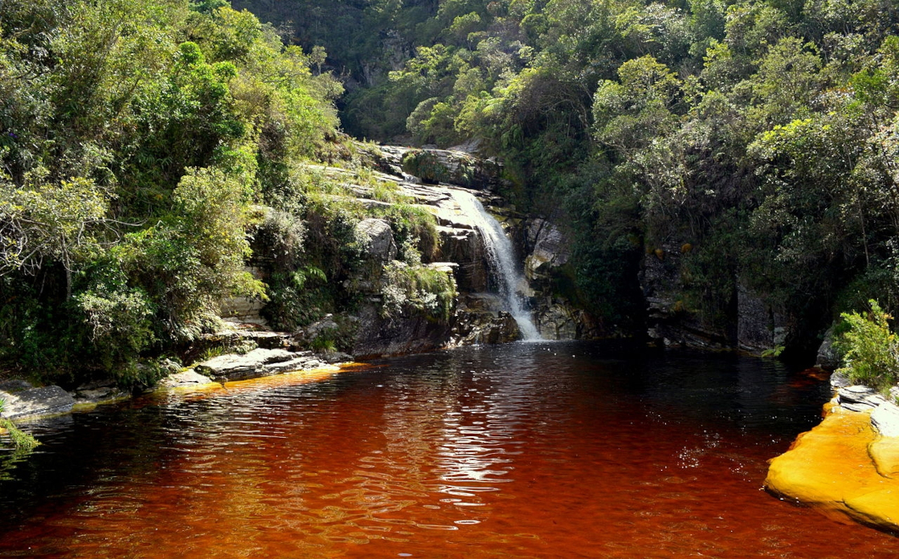

CACHOEIRA DE MACACOS

Uma pequena queda d'água que leva o nome da aconchegante região de Macacos, em Nova Lima. Esta cachoeira é formada por um salto único de aproximadamente 2m de altura com águas límpidas contornadas por formações rochosas. São Sebastião das Águas Claras, carinhosamente chamada de Macacos, é uma região tipicamente de interior de Minas, com uma capela centenária estilo barroco no centro histórico e ruas de paralelepípedo. O vilarejo é cercado de natureza e ótimas opções gastronômicas. Pela proximidade com a capital de Minas, o distrito de Macacos é destino certo para aqueles que buscam boa opção de gastronomia e descanso com contato na natureza e belas paisagens.